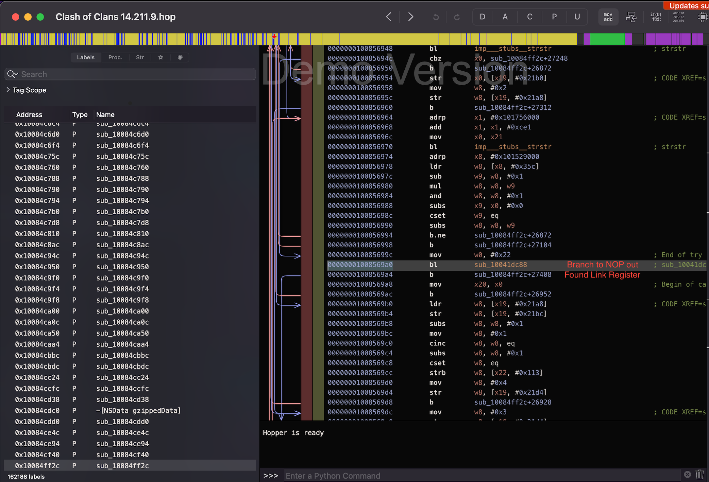

< back
Discovering Flaws in Anti-Cheat Systems - Responsibly Disclosing Vulnerabilities in Supercell Games
A full anti-tamper, anti-debug, and anti-dylib bypass
January 22, 2022 (published April 14, 2022)
Introduction
Before I begin, it should be known that everything reported in this write-up was discovered with permission, in a controlled environment, and all content has been patched and responsibly disclosed to Supercell.
The noticable 3 month gap in between the date this blog post was written and released was due a disclosure period I gave to the developers,
so there was plenty of time for this work to be analyzed and patched by the team.
Over the last few years, I have disclosed various vulnerabilites and bugs to Supercell,
but I never touched their anti cheat. The reason being that I didn't have a purpose to until recently, which was true until October of 2021, when Supercell released an update where they included some new protections inside of the game.
After some time spent reverse engineering the game,
I discovered a all-in-one bypass to Clash of Clans' debugger protection, modification prevention, and jailbreak detection.
Let's talk anti-cheat
Anti-tamper was placed inside of Supercell games to prevent some blatant cheating, and for a while it was successful.
You could still argue that it accomplished its original goal, because cheating in Supercell games is fairly limited and far less popular than it was in 2016.
Proper anti-cheat made its first appearance in the game in late 2017.
For the rest of this write-up, I'll be solely discussing Clash of Clans,
since it is where I spent most of my time researching and it typically contains the most up to date protections.
Let's fast forward to October of 2021. When launching the game with a few game functions hooked inside of a linked library, I noticed that the game was crashing.
I immediately tried using an anti-jailbreak detection tweak to play the game, but that proved ineffective.
After hours spent inside of IDA Pro (without symbols!) researching and debugging the game,
a full bypass finally formed to allow code execution in the game.
The anti-tamper bypass
The anti-tamper made itself apparent first, because when
attempting to patch the game upon opening it, a crash would immediately occur.
There were a few parts of the game not protected by this anti-tamper, however.
If you decide to modify a stub function
(a small, 3 instruction function leading to standard library functions) or modify __DATA__, the game will not crash.
Those areas of weakness don't allow for much leverage,
because hooking standard functions only allows for a bit of info collection and __DATA__ is read/write by default.
The bypass takes advantage of a thread and my hooking library, Capere.
In order to get around the anti-tamper, I injected a dynamic library into the game. Before the main method of Clash of Clans runs,
I spawned a thread which sleeps for 10 seconds before running any code. In the course of those ten seconds,
all of the anti-tamper checks will have already ran to completion. Once the sleep is completed,
the thread will use Capere to place a hook at the target game function, allowing for detoured code to run.
Here's a snippet of the bypass:
void __attribute__((constructor)) hook_load();
void hook_function() {
printf("Pretend I hooked a game function here");
}
void *hook_thread(void *arg)
//wait 10 seconds for anti-cheat to run its course
sleep(10);
Capere* HookExample = CapereInit(0xDEADBEEF, hook_function);
//let's hook the game without crashing!
HookExample->Hook(HookExample);
return NULL;
}
static void hook_load()
{
pthread_t thread_id;
pthread_create(&thread_id, NULL, hook_thread, NULL);
}
The above bypass is still exploitable in the game, but
over time it became more difficult to run with the introduction of anti-dynamic library detection.
Before talking about the library detection, however, let's discuss the anti-debug which was introduced,
since it's an important part of researching new bypasses.
The anti-debug bypass
The anti-debug measures inside of the game are odd.
Similar to the anti-tamper, if you load the game and wait around 10 seconds before starting lldb,
the anti-debug won't be triggered as it only runs on game-load. Once again,
if the game reloads, the game will still crash because it will trigger the anti-tamper / anti-debug.
There is a second way of attaching a debugger to the game, but it requires quick reflexes.
In between the game launching and the Supercell logo appearing, there is around a 1-2 second window
where a debugger can be attached without tripping any anti-debug measures.
This 1-2 second window allows for the anti-dylib bypass, since that code is loaded around the same time too.
The anti-dylib bypass
Since we have a few seconds before the anti-dylib (and anti-debug) code runs, we can abuse that window we're given.
The anti-dylib protection crashes before the anti-debug, so therefore we can use a debugger to bypass the anti-dylib protection.
For example, I can attach lldb before the Supercell logo, wait for the game to crash, and then inspect registers.
Being able to inspect the registers before crashing is very useful, because using
reg read inside of lldb
allows me to view the Link Register (LR) state, which is the address that the processor will return execution to after the current function returns.
Visitng the link register address inside of a disassembler allows you to view what parent function called the crash function,
effectively creating a map of the execution flow of the anti-cheat.
To find where the crash function is called, I attach a breakpoint at (old link register - 0x4) which is one ARM
instruction backwards. Once it's hit again, I obtain the link
register and go to the stored address inside of Hopper. At this point, I can apply a patch to Clash of Clans which will prevent the game
from branching to the function which calls the "crashing" function. Here is a screenshot of it in practice:
Disassembler View (I actually paid for Hopper - my license just ran out unfortunately)

So, let's run through this process again in bullet point form because describing a process in a paragraph form isn't exactly intuitive.
1. Attach lldb to the game in the 1-2 second window before the SUPERCELL logo appears
2. Let the game crash because of the anti-dylib protection
3. Steal the Link Register address upon crashing and load it into a disassembler
4. Go backwards one instruction from the LR address, run lldb + the game again, and attach a breakpoint at that address
5. Let the debugger hit that breakpoint, and once again obtain the Link Register address.
6. Go to the Link Register address and backwards one instruction, and patch the corresponding BR instruction (as seen in screenshot)
There's one small issue at this point, and that's still dealing with the anti-tamper. Bypassing both the anti-dylib and anti-tamper
is possible though, simply because they're called at different times. For this example, we'll be using Capere and signal().
In the constructor .dylib, I place a Capere->Hook at the branch instruction which we need to patch out. I let the hook function
inside of my .dylib restore the original instruction at the anti-dylib branch, and then execution (original_instruction_address+0x4())
to jump over the branch and bypass the anti-dylib protection. Also, since we're restoring the original instruction,
the anti-tamper will also be bypassed. I have to add signal() into my constructor for some reason, because somewhere a SIGABRT is raised.
Just having the signal() get discarded is enough to bypass this issue.
After all of this, game functions can be hooked and all anti-cheat measures have been effectively bypassed.
Also, I want to emphasize that this process works for every single Clash of Clans version, and there isn't any sort of "randomness".
This method appears to be a universal bypass.
Here is the full bypass in C code:
uint64_t patch_address = 0xDEADC0DE;
void __attribute__((constructor)) hook_load();
Capere* CrashHook = 0x0;
void hook_function() {
printf("Pretend I hooked a game function here");
}
void bypass() {
//restore original instruction to prevent anti-dylib from running
CrashHook->HookRestore(CrashHook);
//jump 1 instruction ahead to "jump over" anti-dylib function
((void (*)(void)) (patch_address+0x4))();
}
void *hook_thread(void *arg)
//wait 10 seconds for anti-cheat to run its course
sleep(10);
Capere* HookExample = CapereInit(0xDEADBEEF, hook_function);
//let's hook the game without crashing!
HookExample->Hook(HookExample);
return NULL;
}
static void hook_load()
{
//prevent SIGABRT, lazy solution but works
signal(SIGABRT, SIG_IGN);
//Hook to function which will bypass anti-dylib
CrashHook = CapereInit(patch_address, bypass);
CrashHook->Hook(CrashHook);
pthread_t thread_id;
pthread_create(&thread_id, NULL, hook_thread, NULL);
}